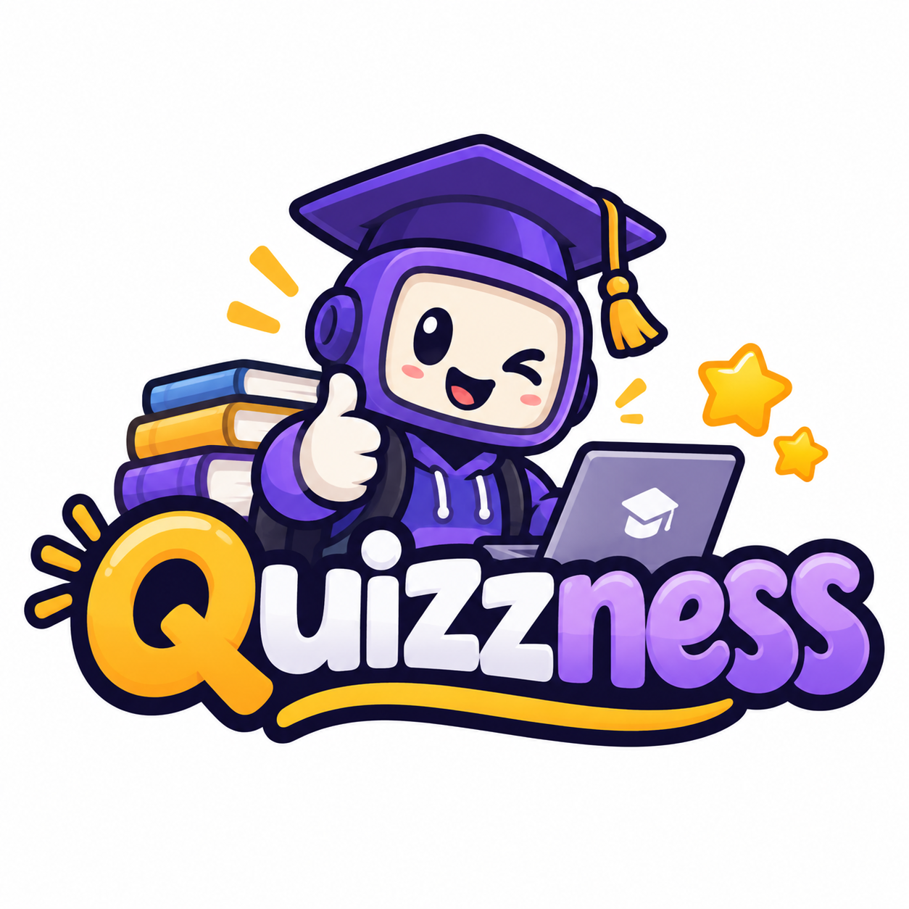
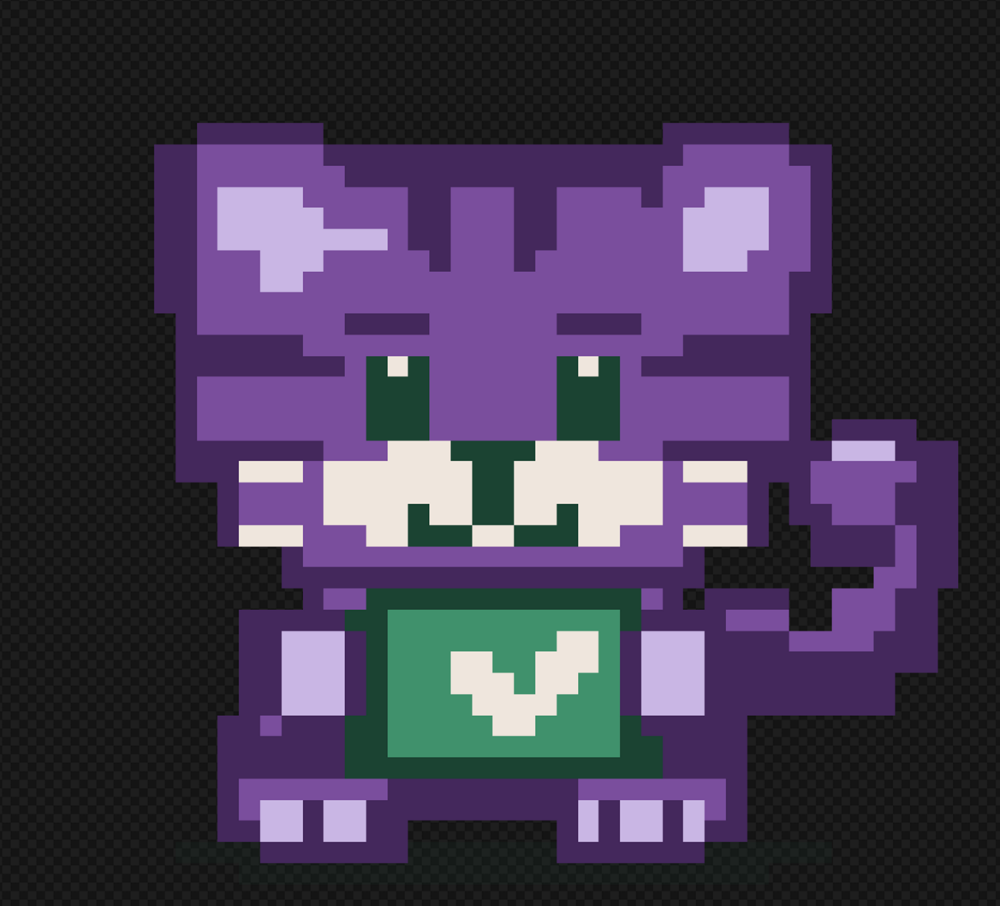

Quizzness
Quizzness Over Pleasure
Turn difficult topics into practice you want to return to.
Quizzness is a proposed platform that turns course topics into games and activities, connects learners with screened peer tutors, and records eligible GiveBack hours through an institution-approved programme.
A static school prototype: no accounts, saved scores, bookings or payments.
Explore the Proposal | Problem | Feasibility | Business model | Competition | Team
The problem and intended users
Our starting segment is tertiary students in Barbados who need help applying course concepts outside class. Mathematics, accounting, languages sciences and computing are possible subjects. CSEC, CAPE and other Caribbean institutions would be later expansion options.
In our 28-response survey, 22 respondents (78.6%) reported difficulty understanding topics at least sometimes; 20 (71.4%) sometimes or frequently stopped studying because a topic felt difficult, confusing or boring. (Quizzness project team, 2026)
- Learners: relevant practice, explanations and help with difficult topics.
- Peer tutors: a structured way to support others and record eligible service time.
- Institutions: the proposed paying customers, content reviewers and approval partners.
Our hypothesis is that linking practice to peer help saves students effort. The survey does not establish that this workflow is better than existing study groups.
The core digital service
- Select a course and review a short topic explanation.
- Complete a challenge and read feedback on the answer.
- Retry a related question and review progress.
- Find a screened tutor for the same topic if help is still needed.
- Confirm a completed session; a coordinator reviews eligible GiveBack time.
Follow an accounting learner through the sample journey.
Participation and scaling
Reusable course activities could serve more learners. More approved tutors could improve subject and time coverage; learners who later demonstrate subject competence could apply to tutor. These are proposed benefits of participation, dependent on quality and availability. Human tutoring and content review still require time and coordination.
Trust and GiveBack
Proposed tutor screening includes subject attainment evidence, a teaching check and a conduct agreement. A coordinator would handle session confirmation and disputes. Hours count toward an institutional requirement only after formal recognition; paid sessions do not automatically earn service credit. A later rollout to minors needs a separate safeguarding process.
Feasibility and evidence
Following Barringer and Ireland, we separate desirability from demand, and industry appeal from the initial target market. (Barringer & Ireland, 2019, pp. 110–121)
Product/service desirability
26/28 respondents (92.9%) rated identifying weak topics 4 or 5 out of 5. For targeted practice and immediate explanations, 27/28 (96.4%) gave those ratings to each question. Nineteen (67.9%) expressed interest in tutor or peer help. (Quizzness project team, 2026)
Gamification research reports positive learning-related effects with variation across studies; it supports testing the design, not promising higher grades. Peer-tutoring guidance stresses training and structured interaction, largely in school settings. Neither establishes the effectiveness of Quizzness. (Sailer & Homner, 2020) (Education Endowment Foundation, n.d.)
Higher-education research supports exploring game-based engagement, but one longitudinal classroom study found lower motivation and exam scores in its gamified class. Adaptive-learning research supports investigating targeted practice, with implementation and evidence limits. We will test useful feedback rather than assume game elements improve grades. (Subhash & Cudney, 2018) (Hanus & Fox, 2015) (Du Plooy et al., 2024)
Product/service demand
21/28 (75.0%) would definitely or probably practise more with a game-like experience; 24/28 (85.7%) rated likelihood of trying the described platform 4 or 5. Eighteen (64.3%) preferred free access with optional premium features. These are stated intentions, not observed use or willingness to pay a tested price. (Quizzness project team, 2026)
Industry attractiveness
Quizlet and Kahoot! already offer practice and feedback. Our proposed position combines reviewed course activities with approved peer support. (Quizlet, n.d.) (Kahoot!, n.d.)
Target-market attractiveness
Our initial tertiary segment offers a focused place to test course relevance and peer support. The survey includes 17 bachelor’s students and other education levels; recruitment and location are not documented, so it cannot estimate demand across Barbados. (Quizzness project team, 2026)
Our judgement
Proceed with a small pilot only after securing a partner, reviewed activities and reliable tutor capacity. Interview institution buyers and tutors, then test two courses. Measure return use, learning checks, tutor attendance, review workload and delivery costs. Institutional demand, educational effectiveness and profitability remain unproven.
Business model
Primarily standard: recurring institution licences, with optional student subscriptions and paid-tutoring commissions as later options. B2B2C describes selling to an institution that provides learner access; it does not establish disruption. (Barringer & Ireland, 2019, pp. 151–154)
- Create value: relevant practice, explanatory feedback and a route to peer help.
- Deliver value: reviewed activities, institution partnerships and coordinated tutor access.
- Capture value: recurring licence revenue that funds content, hosting, screening and support.
Reviewed question banks, subject expertise and a dependable tutor network are key resources. Content production, development, accessibility, coordination and support are key costs.
Comparison with CoachUp
The textbook’s CoachUp case matches athletes with screened coaches and captures revenue from paid coaching. Quizzness proposes a related matching function for subject support, but institution-funded access and approved volunteer sessions would be its core offer. Commission would apply only to optional paid tutoring. (Barringer & Ireland, 2019, p. 150)
Approved GiveBack sessions would remain free to learners under a funded partner programme. Optional paid tutoring would be separate; prices and costs still need testing.
Industry and competition
Current tools show game activities, self-paced practice and reporting as established offerings; research supports testing purposeful game design. These observations do not prove market growth or an unmet market. (Sailer & Homner, 2020) (Quizlet, n.d.) (Kahoot!, n.d.)
The five competitive forces
Our initial assessment: rivalry and substitutes are high because students have established practice tools and revision materials; new-entry pressure is moderate because simple quizzes are easy to build but trust takes time. Supplier power is moderate to high because tutors and reviewers influence quality and cost. Buyer power is high because institutions control purchases and learners have free alternatives. These are team judgements to test (Barringer & Ireland, 2019, pp. 192–198).
The four questions from Five Forces
- Is entry realistic? A narrow pilot is plausible; a full rollout depends on procurement, tutor supply and review capacity.
- Can we reduce forces that suppress profitability? Reusable activities and partner distribution may reduce costs. Free substitutes and coordination costs remain pressures.
- Is there a distinctive position? Reviewed course practice linked to approved peer tutoring and service records is our proposed position. Its value needs testing.
- Is the model difficult for existing firms to copy? Not yet demonstrated. Licensing and features are copyable; dependable partnerships and a trusted network could become stronger assets.
Applied from Chapter 5, pp. 200–201. (Barringer & Ireland, 2019, pp. 200–201)
| Alternative | Practice and feedback | Peer help / service records | Access model |
|---|---|---|---|
| Quizlet (Quizlet, n.d.) | Flashcards and graded test practice. | Approved tutor/hour system not verified in the cited page. | One free test round; further Test access through Quizlet Plus. |
| Kahoot! (Kahoot!, n.d.) | Game activities, reports and self-paced assignments. | Approved tutor/hour system not verified in the cited page. | Free starting option and paid plans. |
| Informal study groups (Quizzness project team, 2026) | Peer questions; explanations vary. | Peer help; formal records depend on the organiser. | Depends on the group. |
| Notes and past papers (Quizzness project team, 2026) | Course revision; feedback depends on solutions. | No tutor access built into the material. | Depends on the material and provider. |
| Quizzness (proposed) | Reviewed challenges, explanations and retries. | Screened tutors and partner-approved eligible hours. | Institution licence proposed; optional premium later. |
The last row is our proposal, not an operating service. “Not verified” does not mean a competitor lacks a feature. Study groups and revision materials are substitute categories reported in the survey.
Our team
Proposed responsibilities, still to be agreed by the group:
- Jelani Clarke: venture concept and product journey.
- Jolicia Williams: research synthesis and proposal editing.
- Akira Jemmott: survey analysis and validation.
- Nathaniel Als: HTML/CSS and browser checks.
- Isaiah (surname to confirm): visual assets and accessibility checks.
Help pilot Quizzness at your institution
We seek a partner to review two course activity sets, nominate a peer-support coordinator and evaluate a small pilot. Adoption, learning checks and delivery costs would guide the decision to expand.
What a partner would contribute
- Permission to use relevant course material and a subject reviewer.
- Approved tutors, a coordinator and agreed service-hour rules.
- A scoped budget and an evaluation plan before a paid rollout.
This is a partner-information preview. No enquiry has been submitted.
Our evidence combines the group survey, Barringer and Ireland, and research on gamification, adaptive learning and peer tutoring. Full references, artwork credits and aggregate survey results.